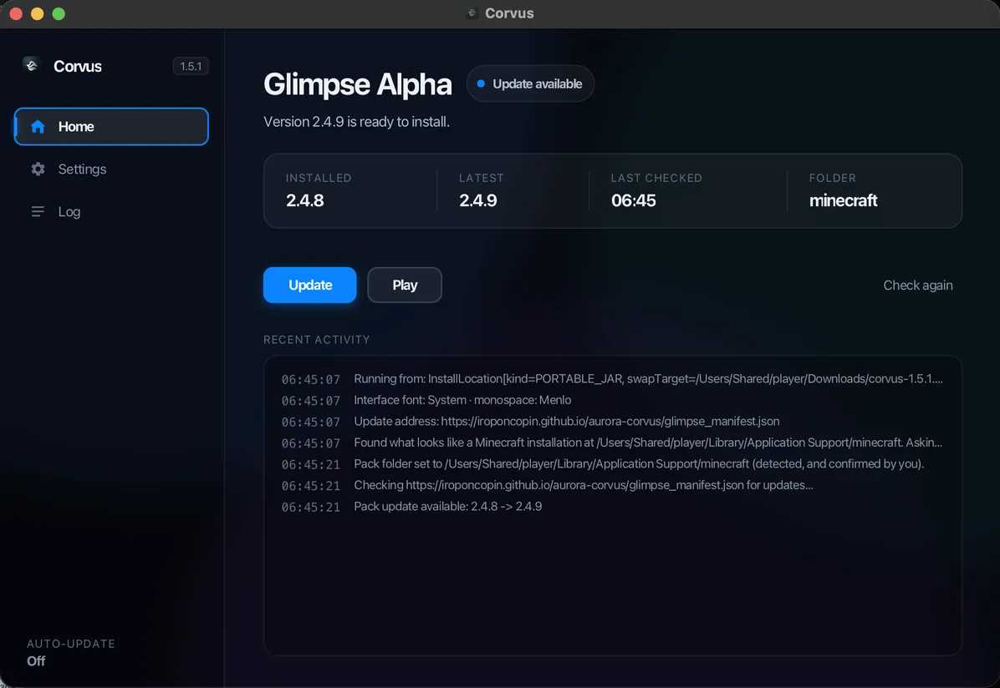
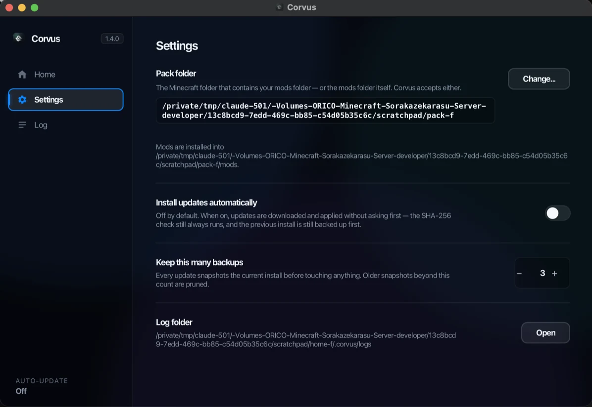
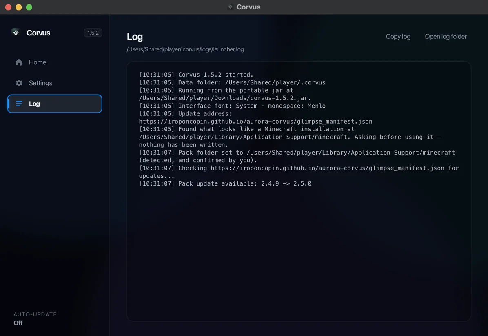
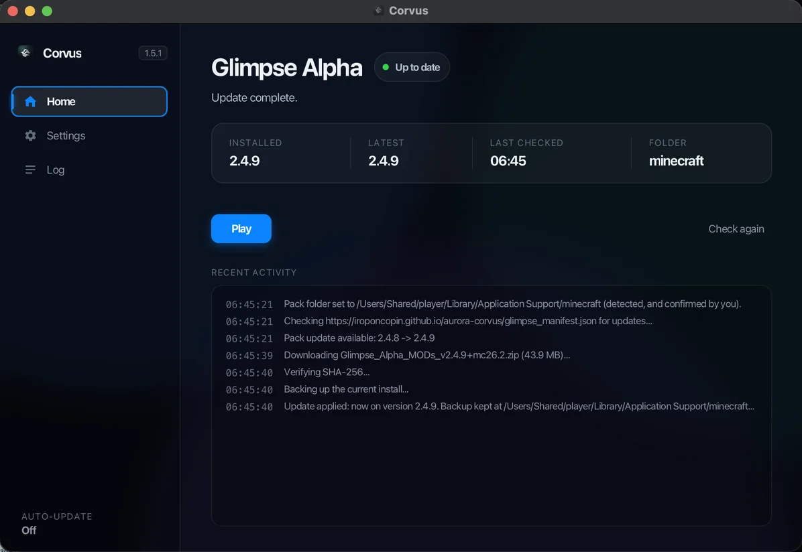
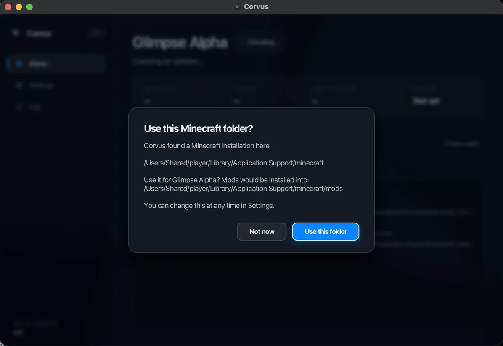

Get started
Download the pack, install it on your server, and let Corvus keep every module up to date.
Reference
Every crafting recipe, every dimensional gate, and a tour of what the suite actually adds to the game.
Status
What shipped in each release, what is planned next, and what is still known to be broken.





Aurora Corvus